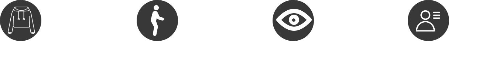
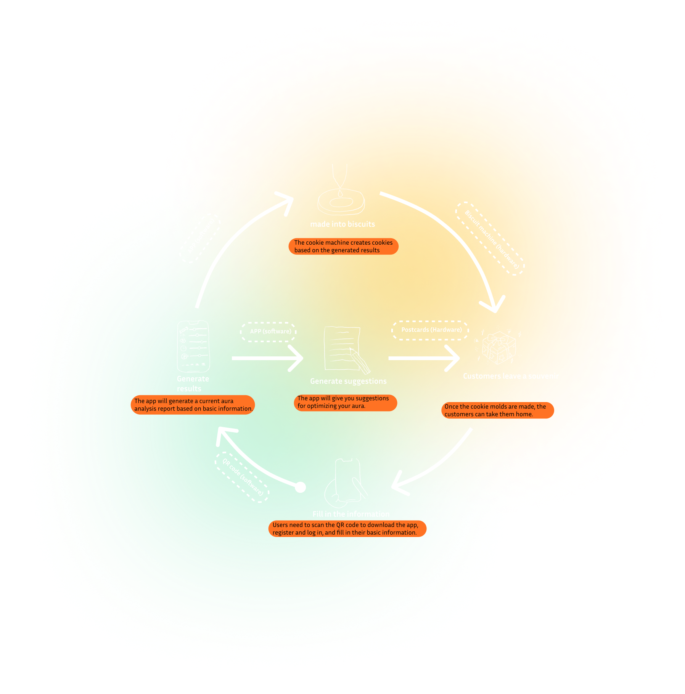

MACHINE
RESEARCH
At the initial stage, we deconstructed the abstract concept of "aura" from multiple dimensions. Observing people from different professional backgrounds, we built connections between visual feedback, body language, and psychological suggestion — establishing a base for the design system.


Core elements affecting personal aura: attire, body language, eye contact, and professional habits. We further divided aura into inner (personality — harder to change) and outer (clothing, posture, expression — adjustable).
PERCEPTION
How does the physical placement of an interaction machine affect users' emotional perception? This spatial study explored the relationship between environmental context and how people experience self-reflection, guiding the final installation design.


By eating biscuits shaped to represent each person's unique aura, users receive a subtle nudge of encouragement and recognition. The behavior inspires self-acceptance, and at the same time communicates respect for others' differences.


.png)